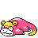

#433
Slowpoke
Psychic
Abilities: Own Tempo, Own Tempo, Regenerator
Base stats BST 315
HP90
Attack65
Defense65
Speed15
Sp. Atk40
Sp. Def40
Evolution
dbbw EVOLVE_LEVEL, 42, SLOWKING_GALARIANdbbw EVOLVE_LEVEL, 37, SLOWBRO_GALARIANdbbw EVOLVE_LEVEL, 37, SLOWBROdbbw EVOLVE_ITEM, KINGS_ROCK, SLOWKINGLevel-up learnset
LevelMoveType
Lv. 1CurseCurse T
Lv. 1TackleNormal
Lv. 1TeleportPsychic
Lv. 1CurseCurse T
Lv. 1TackleNormal
Lv. 1TeleportPsychic
Lv. 4GrowlNormal
Lv. 4GrowlNormal
Lv. 7AcidPoison
Lv. 7Water GunWater
Lv. 10ConfusionPsychic
Lv. 10ConfusionPsychic
Lv. 13DisableNormal
Lv. 13DisableNormal
Lv. 16HeadbuttNormal
Lv. 16HeadbuttNormal
Lv. 17Confuse RayGhost
Lv. 19Water PulseWater
Lv. 19Water PulseWater
Lv. 22Zen HeadbuttPsychic
Lv. 22Zen HeadbuttPsychic
Lv. 25PsybeamPsychic
Lv. 25Aqua TailWater
Lv. 30SurfWater
Lv. 30SurfWater
Lv. 31AmnesiaPsychic
Lv. 31AmnesiaPsychic
Lv. 34Psychic—
Lv. 34Psychic—
Lv. 35Sludge BombPoison
Lv. 37Rain DanceWater
Lv. 37Rain DanceWater
Lv. 40Psych UpNormal
Lv. 40Psych UpNormal
Lv. 43Future SightPsychic
Lv. 43Future SightPsychic
Lv. 46Trick RoomPsychic
Lv. 46Trick RoomPsychic